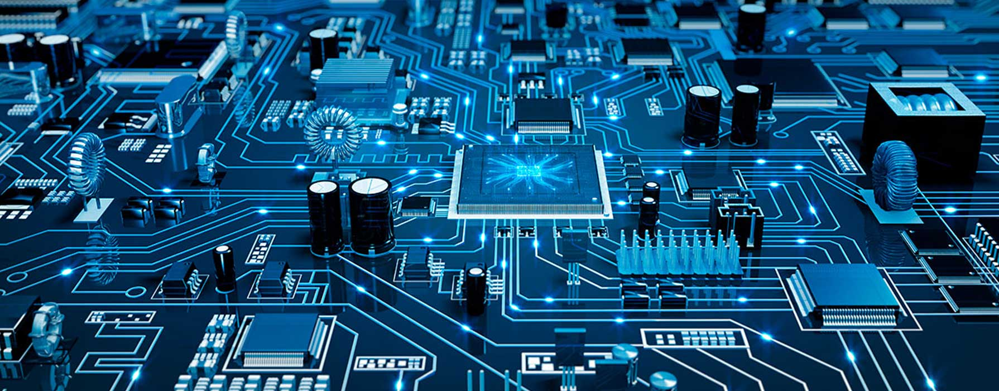

Electronics Engineering can be defined as the branch of engineering that utilises electrical components such as semiconductors, transistors, diodes and others to design Electronics circuits, devices, integrated circuits and electronic systems. The engineers typically also design passive electrical components, usually based on printed circuit boards. Electronics engineers also test circuits built using various electrical components such as resistors, capacitors, inductors etc. 
In ancient days, the communication can be done using Morse code in the telegraphs. These telegraphs use Morse code for long-distance communication over wires. Afterward, the wired telephone, the TV & the wireless radio was invented by the electronic industry. But at present, the information can be shared easily with each other at any place and anytime using e-communication. The communication is mandatory in different fields for processing, controlling, making decisions, and planning. The different fields are finance, accounting, establishment, personal, market, sales, purchase, production, etc. This article discusses what is electronic-communication, types, protocols, and electronic communication applications.